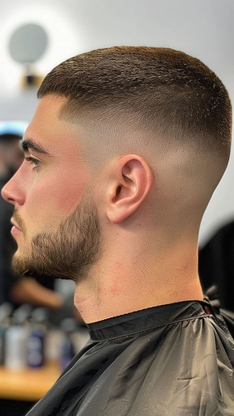
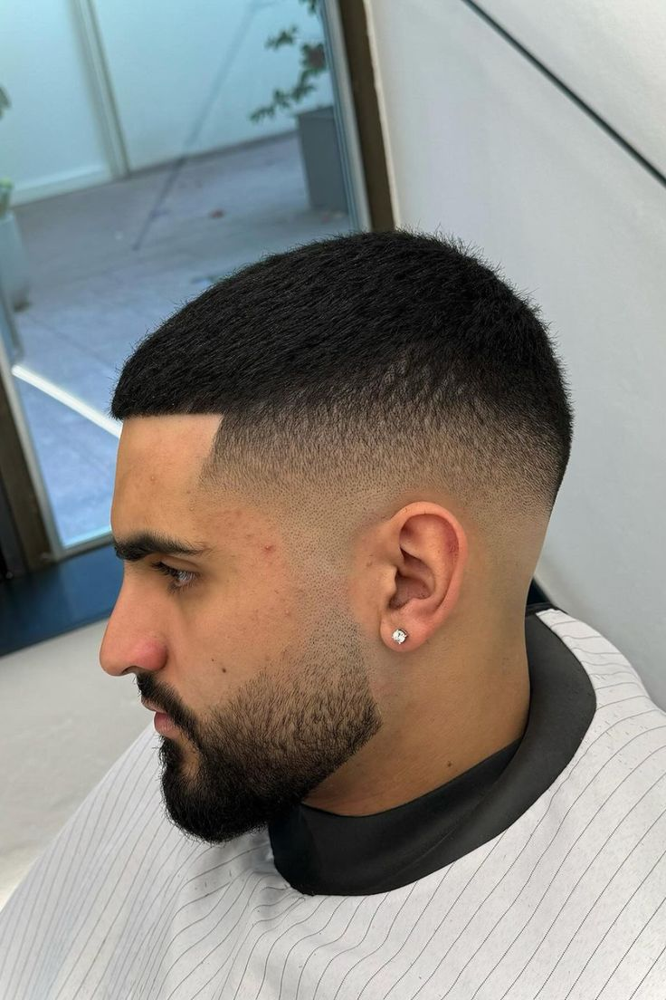
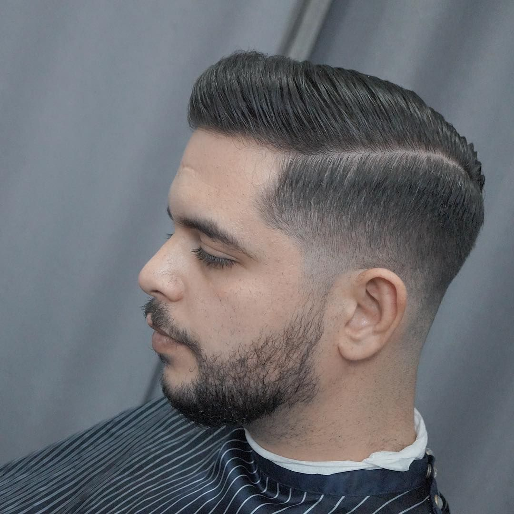
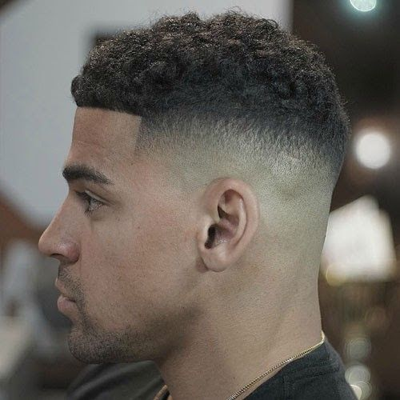
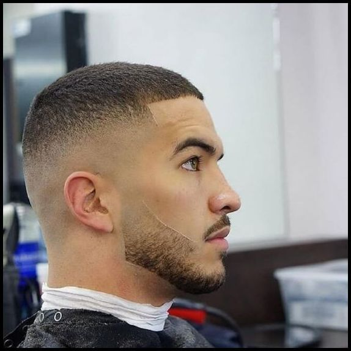
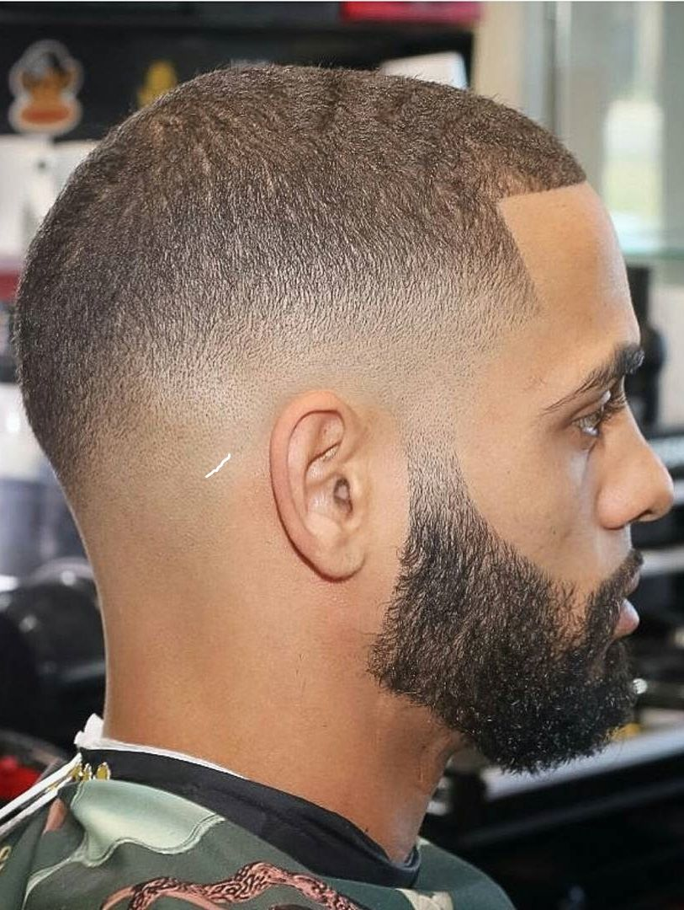

Degradado bajo
Difuminado limpio con control suave del volumen.
Un registro visual de textura, acabado, estructura de la barba y transformación. Cada imagen debe transmitir calma, pulido y precisión.
Introducción a la galería
La galería está pensada para mostrar el rango del salón: degradados al ras, partes superiores más largas, corrección de barba y el tipo de trabajo antes/después que hace que la silueta vuelva a sentirse intencional.
Carrusel en vivo







Degradados impecables
Difuminado limpio con control suave del volumen.
Transición equilibrada y bordes nítidos.
Longitud corta, acabado de alta definición.
La textura natural se preserva con control.
Detalle ejecutivo con contraste.
Difuminado atrevido con acabado fuerte.
Barba y afeitado
Marcado de mejillas y cuello definido.
Pasada suave, mínima irritación y resultado limpio.
Primero comodidad, luego precisión.
Antes / Después
Crecimiento pesado sin jerarquía de forma.
Contorno más nítido y un acabado más intencional.